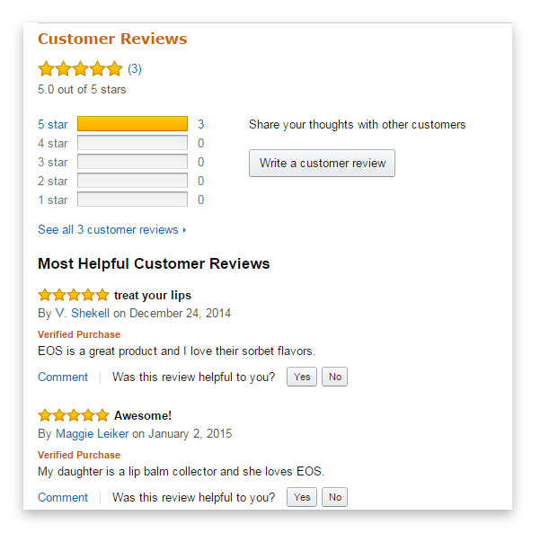
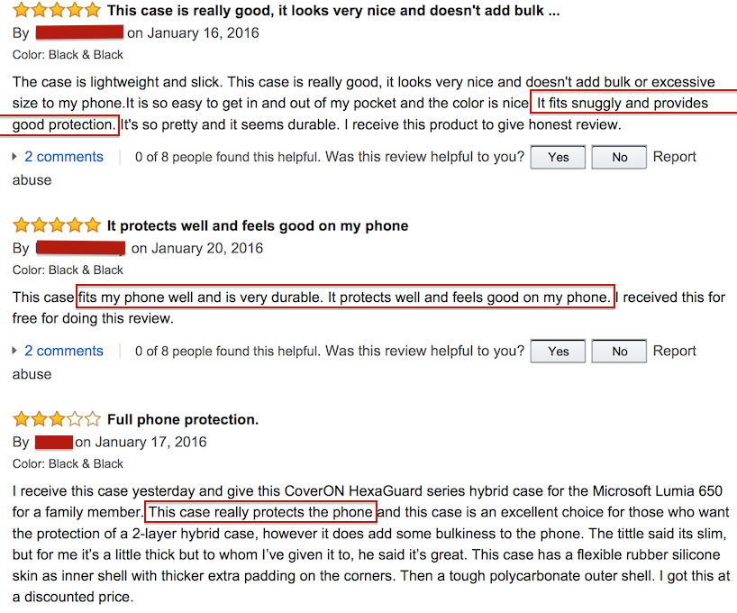
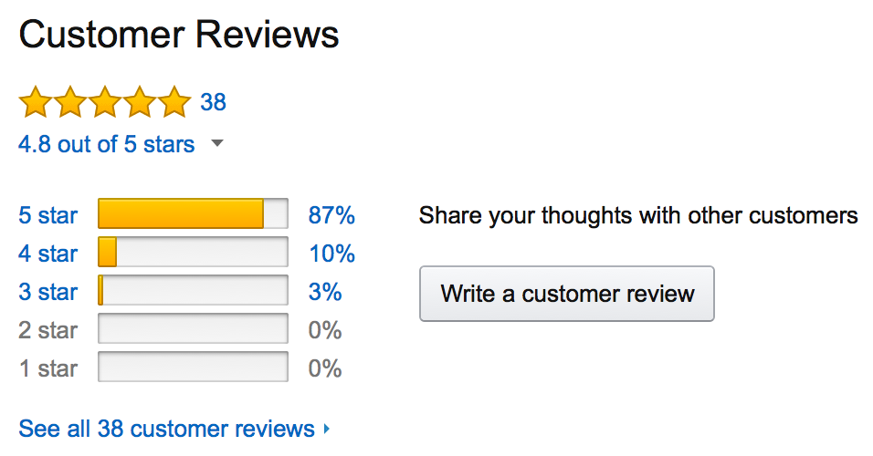

Reviews/Ratings: Amazon lets the users submit reviews to the web page of each product. The rating scale for amazon is from 1 to 5 stars. Amazon provides a badging option for reviewers which indicate the real name of the reviewer or which indicate that the reviewer is one of the top reviewers by popularity. Customers can comment or vote on the reviews, that shows whether they found a review helpful or not. If a review is given enough "helpful" hits, then that comment appears on the front page of the product.
Examples of reviews:



Let's Shop!